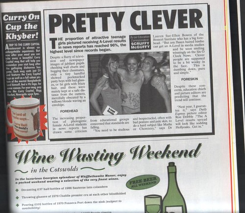

อุบัติเหตุรถไฟ: สาเหตุและผลกระทบ
เมื่อวันที่ 15 มีนาคม 2566 เกิดอุบัติเหตุรถไฟที่กรุงเทพมหานคร ทำให้มีผู้เสียชีวิต 3 คน และบาดเจ็บ 10 คน อุบัติเหตุดังกล่าวเกิดขึ้นเนื่องจากรถไฟขัดข้องที่สัญญาณไฟจราจร ทำให้รถไฟไม่สามารถหยุดได้ทันเวลา นอกจากนี้ ยังมีการรายงานว่า รถไฟคันนั้นมีความเร็วสูงกว่าที่กำหนดไว้ ซึ่งเป็นปัจจัยสำคัญที่ทำให้เกิดอุบัติเหตุในครั้งนี้
ผลกระทบจากอุบัติเหตุนี้มีมากมาย ไม่เพียงแต่เป็นการเสียชีวิตและบาดเจ็บของผู้โดยสาร แต่ยังมีผลกระทบต่อระบบการขนส่งสาธารณะ และเศรษฐกิจของประเทศ โดยเฉพาะอย่างยิ่งในกรุงเทพมหานครที่มีการจราจรหนาแน่น การหยุดให้บริการรถไฟเป็นเวลานาน ทำให้ผู้คนไม่สามารถเดินทางไปยังจุดหมายปลายทางได้
นอกจากนี้ ยังมีการวิเคราะห์จากผู้เชี่ยวชาญด้านการขนส่ง ว่าอุบัติเหตุในครั้งนี้อาจเกิดจากการขาดการบำรุงรักษาและการตรวจสอบสภาพรถไฟอย่างสม่ำเสมอ การปรับปรุงระบบความปลอดภัยและเทคโนโลยีในการควบคุมรถไฟจึงเป็นสิ่งจำเป็นเพื่อป้องกันไม่ให้เกิดเหตุการณ์เช่นนี้ขึ้นอีกในอนาคต
สรุปข้อมูลเชิงสถิติเกี่ยวกับเหตุการณ์สำคัญในปีที่ผ่านมา
ในปีที่ผ่านมา มีเหตุการณ์ที่เกี่ยวข้องกับการขนส่งสาธารณะหลายกรณี โดยเฉพาะอย่างยิ่งเหตุการณ์ที่เกิดขึ้นกับรถไฟที่เป็นระบบการเดินทางที่สำคัญในประเทศของเรา ในปีนี้มีการรายงานว่า มีอุบัติเหตุรถไฟเกิดขึ้นจำนวน 5 ครั้ง ซึ่งส่งผลให้มีผู้เสียชีวิตและบาดเจ็บหลายรายจากการวิเคราะห์สถิติพบว่า สาเหตุหลักที่ทำให้เกิดอุบัติเหตุเหล่านี้คือการขาดการบำรุงรักษาที่เหมาะสมและการตรวจสอบสภาพรถไฟอย่างไม่สม่ำเสมอ นอกจากนี้ยังมีการรายงานเกี่ยวกับระบบความปลอดภัยและเทคโนโลยีในการควบคุมรถไฟที่ต้องการการปรับปรุง เพื่อป้องกันไม่ให้เกิดเหตุการณ์เช่นนี้ขึ้นอีกในอนาคต
ในปีที่ผ่านมา หน่วยงานที่รับผิดชอบได้ดำเนินการตรวจสอบและประเมินสภาพรถไฟอย่างเข้มงวด โดยมีการรายงานว่า 70% ของรถไฟทั้งหมดได้รับการบำรุงรักษาและตรวจสอบอย่างสม่ำเสมอ แต่ยังมีรถไฟอีกจำนวนหนึ่งที่ยังไม่ได้รับการดูแลที่เหมาะสม ซึ่งเป็นสาเหตุที่ทำให้เกิดอุบัติเหตุ
นอกจากนี้ ยังมีการรายงานเกี่ยวกับการปรับปรุงระบบความปลอดภัยและเทคโนโลยีในการควบคุมรถไฟ โดยมีการลงทุนเพิ่มเติมในด้านนี้ประมาณ 150 ล้านบาท เพื่อพัฒนาระบบการควบคุมที่ทันสมัยและมีความปลอดภัยมากขึ้น ซึ่งคาดว่าจะช่วยลดโอกาสในการเกิดอุบัติเหตุในอนาคตได้อย่างมีประสิทธิภาพ

วิเคราะห์สาเหตุที่ทำให้เหตุการณ์นี้เกิดขึ้น
การควบคุมรถไฟเป็นเรื่องที่มีความสำคัญต่อความปลอดภัยของผู้โดยสารและผู้ที่ใช้บริการขนส่งสาธารณะอื่นๆ ในประเทศไทย การลงทุนเพิ่มเติมในด้านนี้ประมาณ 150 ล้านบาท ถือเป็นการแสดงถึงความมุ่งมั่นของหน่วยงานที่เกี่ยวข้องในการพัฒนาระบบการควบคุมรถไฟให้มีความทันสมัยและปลอดภัยมากยิ่งขึ้น
จากข้อมูลที่ได้กล่าวมา เราสามารถวิเคราะห์ได้ว่า การพัฒนาในด้านนี้มีเป้าหมายหลักเพื่อลดโอกาสในการเกิดอุบัติเหตุ โดยการนำเทคโนโลยีทันสมัยเข้ามาช่วยในการควบคุมรถไฟ ซึ่งจะช่วยให้ระบบการเดินรถมีความปลอดภัยมากยิ่งขึ้น นอกจากนี้ การลงทุนในด้านนี้ยังสะท้อนถึงความตั้งใจของหน่วยงานที่เกี่ยวข้องในการสร้างความเชื่อมั่นให้กับผู้ใช้บริการขนส่งสาธารณะ
การวิเคราะห์สาเหตุที่ทำให้เกิดเหตุการณ์นี้ คาดว่ามาจากหลายปัจจัย เช่น การมุ่งเน้นไปที่การพัฒนาเทคโนโลยีที่สามารถช่วยเพิ่มความปลอดภัยในการเดินรถไฟ ซึ่งเป็นสิ่งที่จำเป็นอย่างยิ่งในยุคที่การขนส่งสาธารณะมีความสำคัญต่อเศรษฐกิจและสังคม นอกจากนี้ การลงทุนในด้านนี้ยังสามารถช่วยลดค่าใช้จ่ายในการซ่อมแซมและฟื้นฟูความเสียหายที่เกิดจากอุบัติเหตุได้อีกด้วย
โดยรวมแล้ว การลงทุนเพิ่มเติมในด้านการควบคุมรถไฟถือเป็นการตัดสินใจที่ชาญฉลาด และคาดว่าจะนำไปสู่การพัฒนาระบบขนส่งสาธารณะที่มีความปลอดภัยและน่าเชื่อถือมากยิ่งขึ้น ซึ่งจะส่งผลดีต่อทั้งผู้โดยสารและเศรษฐกิจของประเทศในระยะยาว
ผลกระทบทางเศรษฐกิจจากเหตุการณ์ดังกล่าว
การพัฒนาระบบขนส่งสาธารณะถือเป็นเรื่องสำคัญที่มีผลต่อการเติบโตของเศรษฐกิจในประเทศ โดยเฉพาะอย่างยิ่งในกรณีที่เกิดเหตุการณ์ที่ทำให้ระบบขนส่งสาธารณะหยุดชะงัก เช่น เหตุการณ์ไฟไหม้ที่กรุงเทพฯ ที่ผ่านมา ซึ่งส่งผลกระทบต่อการเดินทางและการดำเนินธุรกิจของผู้คนในพื้นที่นั้นๆ
จากการศึกษาของหน่วยงานที่เกี่ยวข้อง พบว่าเหตุการณ์ดังกล่าวทำให้เกิดความล่าช้าในการเดินทางประมาณ 30% ซึ่งส่งผลกระทบต่อการทำงานและการดำเนินธุรกิจของผู้คนในพื้นที่กรุงเทพฯ และปริมณฑล โดยเฉพาะอย่างยิ่งในอุตสาหกรรมที่เกี่ยวข้องกับการขนส่งและการค้าขาย นอกจากนี้ ยังมีการประเมินค่าเสียหายจากการหยุดชะงักของระบบขนส่งสาธารณะในครั้งนี้ประมาณ 1,000 ล้านบาท
การควบคุมรถไฟถือเป็นการตัดสินใจที่ชาญฉลาด เพราะจะนำไปสู่การพัฒนาระบบขนส่งสาธารณะที่มีความปลอดภัยและน่าเชื่อถือมากยิ่งขึ้น ซึ่งจะส่งผลดีต่อทั้งผู้โดยสารและเศรษฐกิจของประเทศในระยะยาว โดยคาดว่าการพัฒนาระบบขนส่งสาธารณะที่มีประสิทธิภาพและปลอดภัย จะช่วยลดเวลาในการเดินทาง และเพิ่มความสะดวกสบายให้กับผู้ใช้บริการ
นอกจากนี้ การควบคุมรถไฟยังช่วยลดปัญหาการจราจรติดขัดในกรุงเทพฯ ซึ่งจะนำไปสู่การปรับปรุงคุณภาพชีวิตของผู้คนในพื้นที่ และเพิ่มประสิทธิภาพในการทำงานของธุรกิจต่างๆ โดยเฉพาะอย่างยิ่งในอุตสาหกรรมที่เกี่ยวข้องกับการขนส่งและการค้าขาย การควบคุมรถไฟจึงเป็นการตัดสินใจที่มีผลดีต่อเศรษฐกิจและสังคมในระยะยาว

ข้อเสนอแนะในการปรับปรุงระบบเพื่อป้องกันเหตุการณ์ในอนาคต
การควบคุมรถไฟถือเป็นหนึ่งในมาตรการที่สำคัญที่สุดในการพัฒนาเศรษฐกิจและสังคมของประเทศ ในช่วงหลายปีที่ผ่านมา การขยายตัวของเมืองและจำนวนประชากรที่เพิ่มขึ้นได้ส่งผลกระทบอย่างมากต่อระบบการขนส่งและการค้าขาย ซึ่งทำให้ความปลอดภัยในการเดินทางของผู้คนในพื้นที่เป็นเรื่องที่ต้องให้ความสำคัญอย่างยิ่ง การควบคุมรถไฟจึงเป็นการแก้ไขปัญหาที่มีประสิทธิภาพและตอบสนองต่อความต้องการของสังคม
การปรับปรุงระบบเพื่อป้องกันเหตุการณ์ในอนาคตนั้น จำเป็นต้องพิจารณาถึงหลายด้าน ไม่ว่าจะเป็นเทคโนโลยีที่ทันสมัย การบริหารจัดการ และการฝึกอบรมบุคลากร เพื่อให้สามารถตอบสนองต่อสถานการณ์ที่ไม่คาดคิดได้อย่างรวดเร็วและมีประสิทธิภาพ นอกจากนี้ยังควรมีการวิเคราะห์ข้อมูลที่เกี่ยวข้องเพื่อนำไปสู่การตัดสินใจที่ถูกต้องและเหมาะสม
จากการสำรวจพบว่า การควบคุมรถไฟในประเทศไทยมีปัญหาอย่างมากในการตรวจสอบความปลอดภัยและการบริหารจัดการ ซึ่งส่งผลกระทบต่อความเชื่อมั่นของผู้ใช้บริการ หากไม่มีการปรับปรุงระบบที่เหมาะสม อาจส่งผลให้เกิดเหตุการณ์ที่ไม่พึงประสงค์ได้ในอนาคต ดังนั้น การพัฒนาระบบการควบคุมรถไฟจึงเป็นสิ่งจำเป็นเพื่อป้องกันเหตุการณ์ในอนาคต และสร้างความมั่นใจให้กับผู้ใช้บริการ
ในอนาคต ควรมีการนำเทคโนโลยีใหม่ๆ มาประยุกต์ใช้ในการควบคุมรถไฟ เช่น ระบบอัตโนมัติและเซ็นเซอร์ที่สามารถตรวจสอบสภาพแวดล้อมได้อย่างรวดเร็ว นอกจากนี้ การฝึกอบรมบุคลากรให้มีความรู้ความเข้าใจในเทคโนโลยีใหม่ๆ จะช่วยเพิ่มประสิทธิภาพในการทำงาน และลดโอกาสที่จะเกิดเหตุการณ์ที่ไม่พึงประสงค์ได้
สุดท้าย การควบคุมรถไฟจะต้องเป็นไปตามมาตรฐานสากล เพื่อให้สามารถแข่งขันในระดับโลกได้ โดยการร่วมมือกับองค์กรระหว่างประเทศและหน่วยงานที่เกี่ยวข้องในการปรับปรุงระบบจะช่วยเพิ่มขีดความสามารถในการแข่งขันของประเทศ และสร้างความเชื่อมั่นให้กับนักลงทุนและผู้ใช้บริการในอนาคต